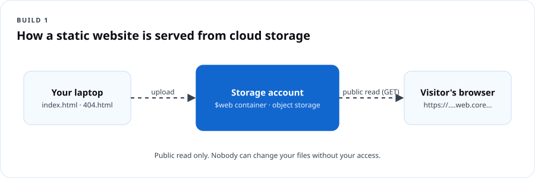

Cloud Fundamentals 101
Course overview
You already use the cloud. Your phone backs up pictures to it. Your bank app runs on it. The streaming show you watched last night came out of it. This course pulls back the curtain so you can understand it, use it safely, protect your account and your money, and create two real things: a public website and a virtual computer.
DCT courses follow the same four moves every time: Understand → Use → Protect → Create. You will see those words at the top of every module.
What you will be able to do
By the end of this course you will be able to:
- Explain cloud computing in plain language to a family member, a hiring manager, or a customer.
- Tell the difference between IaaS, PaaS and SaaS and name an example of each.
- Compare how AWS, Microsoft Azure and Google Cloud name the same core services.
- Lock down a new cloud account with MFA, a budget alert, and a least-privilege habit.
- Publish a static website from cloud storage.
- Create, connect to, and delete a Linux virtual machine without leaving anything running that costs you money.
- Read a cloud bill and explain what generated each charge.
Who this is for
| If you are… | This course gives you… |
|---|---|
| Brand new to tech | The vocabulary, so meetings and job posts stop sounding like a foreign language |
| A career changer | A first portfolio piece (your website) and a clear next certification |
| A small-business owner | Enough knowledge to stop overpaying and to ask vendors the right questions |
| A senior or parent | Confidence about where your photos and accounts actually live, and how to keep them safe |
| A teen | A real build to show, and a head start on a cert that employers recognize |
What you need
- A computer (Windows, Mac, Linux or a Chromebook) and an internet connection.
- An email address you control and a phone for multi-factor authentication.
- A credit or debit card for cloud sign-up. Providers verify identity with a card. Following the cleanup steps keeps charges at or near zero, but you are responsible for what you create.
- About 6–8 hours, spread across as many days as you like.
How this course is built
| Module | Title | Time | Deliverable |
|---|---|---|---|
| 1 | Understand the cloud | 75 min | Cloud vocabulary card |
| 2 | Protect your account (and your wallet) | 60 min | Hardened account + budget alert |
| 3 | Build a website | 90 min | A live static website URL |
| 4 | Explore a virtual machine | 90 min | Screenshot of your VM terminal + clean deletion |
| 5 | Check your knowledge and clean up | 45 min | Final check (20 questions) + cleanup checklist |
How you are assessed
| Item | Weight | Pass mark |
|---|---|---|
| Module knowledge checks (4) | 40% | 70% each, retakes allowed |
| Build 1: static website (URL submitted) | 20% | Site loads publicly |
| Build 2: virtual machine (screenshot + deletion proof) | 20% | Connected + deleted |
| Final check | 20% | 70% |
Earn 70% overall to receive the DCT Cloud 101 Certificate of Completion. This is a DCT credential, not a vendor certification.
Module 1 — Understand the cloud
Understand. Learning objectives: define cloud computing; describe the five essential characteristics; compare service models (IaaS, PaaS, SaaS) and deployment models (public, private, hybrid, multi-cloud); explain shared responsibility.
1.1 What the cloud actually is
The cloud is other people's computers that you rent over the internet, on demand, and pay for by usage. Those computers sit in giant buildings called datacenters, owned by companies such as Amazon (AWS), Microsoft (Azure) and Google (Google Cloud).
The U.S. National Institute of Standards and Technology (NIST SP 800-145) gives the official definition. Cloud computing has five essential characteristics:
| Characteristic | What it means | Everyday version |
|---|---|---|
| On-demand self-service | You create resources yourself, no phone call or purchase order | Ordering on an app instead of calling the store |
| Broad network access | Reach it from any device over the network | Your email works on your phone and your laptop |
| Resource pooling | Many customers share the same physical hardware, kept separate by software | Apartment building: shared walls and plumbing, private locked units |
| Rapid elasticity | Scale up or down quickly, sometimes automatically | Adding folding tables when more cousins show up to the cookout |
| Measured service | Usage is metered and billed | The electric meter on the side of the house |
Dope Translation: Owning servers is like buying a whole building to run a barbershop. You pay for the roof, the plumbing, the security, and the empty chairs on a slow Tuesday. The cloud is renting a chair by the hour. Busy Saturday? Rent ten chairs. Slow Tuesday? Rent one. You only pay for chairs with somebody in them.
1.2 CapEx vs. OpEx
- Capital expenditure (CapEx): big money up front for things you own — servers, buildings, generators. You pay before you know if the business will use it all.
- Operational expenditure (OpEx): pay as you go for what you use this month. Cloud is mostly OpEx.
Dope Translation: CapEx is buying the car. OpEx is taking a ride share. If you drive every day, owning may win. If you drive twice a month, renting rides is smarter. Businesses do the same math with servers.
1.3 The service models: IaaS, PaaS, SaaS

| Model | You manage | Provider manages | Example |
|---|---|---|---|
| IaaS — Infrastructure as a Service | Operating system, apps, data, access | Physical hardware, network, virtualization | Azure Virtual Machines, AWS EC2, Google Compute Engine |
| PaaS — Platform as a Service | Your app code, data, access | Everything underneath, including OS patching | Azure App Service, AWS Elastic Beanstalk, Google App Engine |
| SaaS — Software as a Service | Your data and who can use it | The whole application | Microsoft 365, Gmail, Zoom, Canva |
| Serverless / FaaS | Just the function code | Servers, scaling, runtime | Azure Functions, AWS Lambda, Google Cloud Run functions |
Dope Translationthe pizza model: - On-premises: you make pizza at home. You buy the oven, the flour, everything. - IaaS: you rent a kitchen with an oven. You bring ingredients and cook. - PaaS: you go to a make-your-own-pizza spot. They have the dough and oven; you pick the toppings. - SaaS: you order delivery. You just eat — and decide who gets a slice.
1.4 Deployment models
- Public cloud: shared provider infrastructure, available to anyone with an account. Most of this course.
- Private cloud: cloud-style infrastructure used by one organization only, on-premises or hosted.
- Hybrid cloud: public and private connected and working together. Common in government and banks.
- Multi-cloud: using more than one public provider (for example Azure for identity and email, AWS for a specific app).
Real Talk: A county agency keeps resident records in its own datacenter because of a records law, but runs its public website and email in the public cloud. That is hybrid. When the same agency also uses Google Workspace for a youth program, it is multi-cloud too.
1.5 Shared responsibility — the most important idea in this course

The provider secures the cloud itself (buildings, hardware, the network between datacenters). You secure what you put in the cloud (your data, your accounts, who has access, the settings you choose). As you move from IaaS to PaaS to SaaS, the provider takes on more — but you always own your data, your identities and your access decisions.
Dope Translation: You rent a storage unit. The company owns the fence, the gate, the cameras and the building. But if you leave your unit unlocked, or hand your code to everybody in the group chat, that's on you. Most cloud breaches aren't hackers breaking the fence. They're unlocked units.
1.6 The big three, side by side
| What you want | Azure | AWS | Google Cloud |
|---|---|---|---|
| A virtual computer | Virtual Machines | EC2 | Compute Engine |
| File / object storage | Blob Storage (in a Storage account) | S3 | Cloud Storage |
| A container for resources | Resource group | (Tags / CloudFormation stacks; accounts) | Project |
| Identity & sign-in | Microsoft Entra ID + Azure RBAC | IAM / IAM Identity Center | Cloud Identity + IAM |
| Private network | Virtual network (VNet) | VPC | VPC |
| Firewall rules on a network | Network security group (NSG) | Security group | VPC firewall rules |
| Run code without servers | Azure Functions | Lambda | Cloud Run functions |
| Monitoring | Azure Monitor | CloudWatch | Cloud Monitoring |
| Cost tracking | Cost Management + Budgets | Billing & Cost Management + Budgets | Billing + Budgets |
| Geographic location | Region (with availability zones) | Region (with availability zones) | Region (with zones) |
Takeaway: Learn the concept once. The names change; the ideas do not.
1.7 Regions and availability zones
- A region is a geographic area with one or more datacenters (for example East US or us-east-1, both in Virginia).
- An availability zone is a physically separate datacenter (or group) inside a region with its own power, cooling and networking.
- Put copies of important things in more than one zone so one building's outage does not take you down.
Dope Translation: Don't keep all your money in one shoebox. A zone is a second shoebox in a different room. A second region is a shoebox at your aunt's house across town.
Module 1 knowledge check
Module 2 — Protect your account (and your wallet)
Protect. Learning objectives: secure the root/owner account; enable MFA; create a budget alert; explain least privilege; name the three questions DCT asks before creating anything.
2.1 The three questions before you create anything
Every DCT build starts with these. Write them on a sticky note.
- Who can access it? Check permissions. Give people and apps only what they need. Protect your sign-in with MFA.
- What could it cost? Check the provider's pricing for the service and region. A budget alert notifies you; it is not a spending cap.
- How will I clean it up? Keep a list of every resource you create. Delete related disks, IPs and network pieces too — they can keep charging.
Dope Translation: Before you open a new spot, you ask: who has a key, what's the rent, and how do I shut it down clean if it doesn't work out. Same three questions. Every time.
2.2 Your first account is the master key
When you sign up, you create the most powerful identity in that cloud: the AWS root user, the Azure account owner / first Global Administrator, or the Google Cloud organization/billing owner. Anyone holding it can delete everything and spend unlimited money.
Do this today:
- Use a long, unique passphrase (four or more random words) stored in a password manager.
- Turn on multi-factor authentication with an authenticator app or passkey, not SMS if you can avoid it.
- For daily work, use a separate, less-powerful identity (AWS: an IAM Identity Center user; Azure: a user with only the roles you need; Google: a user with project-level roles).
- Never put keys or passwords in code, screenshots, or chat.
2.3 MFA — why it matters
MFA means proving who you are with two or more different kinds of evidence:
| Factor type | Example |
|---|---|
| Something you know | Password, PIN |
| Something you have | Phone with authenticator app, security key |
| Something you are | Fingerprint, face |
Microsoft has reported for years that MFA blocks the overwhelming majority of automated account-takeover attempts. Passkeys and authenticator push with number matching resist phishing much better than text codes.
Real Talk: A stolen password is a copied key. MFA is the deadbolt that also needs your thumbprint. The thief can have your key all day — the door still doesn't open.
2.4 Least privilege
Give every person, app and script the minimum access needed, for the minimum time. If someone only needs to read reports, do not make them an Owner.
Dope Translation: The new hire at the corner store works the register. They don't get the safe combination, the supplier's number, and the keys to your car. Access matches the job.
2.5 Budgets and cost alerts
Set one now, before any build. Suggested: a $5 monthly budget with alerts at 50%, 80% and 100% (actual) and 100% (forecasted).
- Azure: Portal → search Cost Management → Budgets → Add. Choose your subscription scope, amount, and alert recipients.
- AWS: Console → Billing and Cost Management → Budgets → Create budget → Cost budget.
- Google Cloud: Console → Billing → Budgets & alerts → Create budget.
Watch your wallet: Budgets warn you; they do not stop spending. Billing data can lag by hours. Your real protection is the cleanup habit in Module 5.
2.6 Free tiers and credits
Each provider offers a free tier and/or new-account credits. The details change often, so always read the current page before you build: Azure free account, AWS Free Tier, Google Cloud Free Program. Students may qualify for Azure for Students (no card required at time of writing; check eligibility).
Lab 2 — Harden your account (30 min)
Pick one provider for the rest of the course. Steps below use Azure; AWS and Google equivalents are in the comparison table.
- Sign in at portal.azure.com.
- Top-right avatar → View account → Security info → add the Microsoft Authenticator app (or a passkey).
- Search Cost Management + Billing → Budgets → + Add. Name
dct-starter-budget, amount5, reset monthly. Add alerts at 50% and 100% actual, 100% forecasted. Enter your email. - Search Subscriptions → your subscription → Access control (IAM) → Role assignments. Write down who has Owner. If it's anyone but you, ask why.
- Screenshot your budget page. That is your Module 2 deliverable.
Module 2 knowledge check
Module 3 — Build a website (Build 1)
Create. Learning objectives: explain object storage; explain what a static website is; publish a site from cloud storage; describe public vs. private access; clean up.
3.1 What you are building
A static website is a set of files — HTML, CSS, images — sent to a visitor's browser exactly as stored. No database, no server code. Perfect for a portfolio, a résumé page, a small-business info page, or a church event flyer.
Cloud object storage (Azure Blob, AWS S3, Google Cloud Storage) holds files as objects inside containers/buckets and can serve them directly over the web.

Dope Translation: Object storage is a giant storage locker with numbered bins. A static website is when you put a poster in one bin, turn the bin window to face the street, and anybody walking by can read the poster. They can look. They can't reach in and change it.
3.2 Starter website file
Create a folder on your computer called my-first-site. Inside, create index.html with this content (change the name and lines to yours):
<!doctype html>
<html lang="en">
<head>
<meta charset="utf-8">
<meta name="viewport" content="width=device-width, initial-scale=1">
<title>Jordan Lee · Cloud in Progress</title>
<style>
body{font-family:system-ui,sans-serif;max-width:640px;margin:3rem auto;padding:0 1rem;line-height:1.6;color:#122;background:#f6f8ff}
h1{color:#2f6bff} .tag{display:inline-block;background:#122;color:#fff;padding:.2rem .6rem;border-radius:4px;font-size:.85rem}
</style>
</head>
<body>
<span class="tag">Built in the cloud</span>
<h1>Hi, I'm Jordan.</h1>
<p>I'm learning cloud computing with The Dope Cloud Teacher. This page is hosted on cloud object storage.</p>
<h2>What I can do now</h2>
<ul>
<li>Explain IaaS, PaaS and SaaS</li>
<li>Secure a cloud account with MFA and a budget</li>
<li>Publish a static website</li>
</ul>
<p>Next up: a virtual machine.</p>
</body>
</html>
Also create 404.html with a one-line message like <h1>Page not found — but you found me.</h1>.
Lab 3A — Azure Storage static website (45 min)
Official walkthrough: Host a static website in Azure Storage.
- Create a resource group. Portal → Resource groups → Create. Name
rg-dct101-web, regionEast US(or nearest). Review + create. - Create a storage account. Storage accounts → Create. Resource group
rg-dct101-web. Name must be globally unique, lowercase, 3–24 letters/numbers (e.g.dctjordanweb01). Region same. Primary service: Azure Blob Storage or Azure Data Lake Storage Gen2. Performance Standard. Redundancy LRS (cheapest — fine for a learning site). Review + create. - Open the storage account → Data management → Static website → Enabled. Index document
index.html, error document404.html. Save. Copy the Primary endpoint URL. - Go to Containers. A container named
$webnow exists. Open it → Upload → select both files → Upload. - Paste the primary endpoint into a browser. Your site is live.
- Submit the URL as your Build 1 deliverable.
Watch your wallet: Storage for two tiny files costs fractions of a cent per month, but data transfer and request charges exist. Delete it after grading if you don't want to keep it.
Lab 3B — AWS S3 alternative (45 min)
Official walkthrough: Tutorial: Configuring a static website on Amazon S3.
- S3 → Create bucket. Unique name, your region.
- Under Block Public Access settings, uncheck Block all public access and acknowledge. (This bucket is intentionally public. Never do this for a bucket with private data.)
- Upload
index.htmland404.html. - Properties → Static website hosting → Enable → index
index.html, error404.html. - Permissions → Bucket policy → add a policy allowing
s3:GetObjectforarn:aws:s3:::YOUR-BUCKET/*(copy from the AWS tutorial). - Open the bucket website endpoint from Properties.
Real Talk: Misconfigured public storage buckets have exposed millions of real records — voter rolls, medical files, military documents. You just learned the exact switch that causes it. Public is for posters. Private is the default for everything else.
3.3 Going further (optional)
- Custom domain + HTTPS: Azure Front Door or Azure CDN; AWS CloudFront; Google Cloud Load Balancing. These add cost — read pricing first.
- Azure Static Web Apps (free plan available) and GitHub Pages are other low-cost ways to host static sites with HTTPS and a deploy pipeline.
Module 3 knowledge check
Module 4 — Explore a virtual machine (Build 2)
Use + Create. Learning objectives: explain what a VM is; name the resources a VM depends on; create a Linux VM with secure access; connect over SSH; run basic commands; delete everything.
4.1 What a virtual machine is
A virtual machine (VM) is a full computer — CPU, memory, disk, network card, operating system — made of software running on a provider's physical server. A program called the hypervisor carves one big physical server into many isolated VMs.
Dope Translation: One big house split into apartments. Each apartment has its own door, kitchen and lock. You rent one apartment; you don't own the house. You decide the furniture (software) and who gets a key (access). The landlord fixes the roof (hardware).
4.2 Everything a VM needs
When you click "Create VM", the cloud quietly creates several resources. Each one can cost money and must be cleaned up.
| Resource | Purpose | Bills separately? |
|---|---|---|
| VM (compute) | CPU + memory | Yes, per second/hour while running |
| OS disk | The hard drive | Yes, even when the VM is stopped |
| Network interface (NIC) | Connects VM to network | No (usually) |
| Virtual network + subnet | Private network | No (basic) |
| Public IP address | Reachable from internet | Yes (IPv4 addresses are billed) |
| Network security group | Firewall rules | No |
Watch your wallet: In Azure, Stop (deallocate) ends compute charges, but the disk and public IP keep billing. Delete the resource group to remove all of it.
4.3 Secure access — SSH keys and firewall rules
- SSH (Secure Shell) is how you get a command line on a Linux machine over the network, on port 22.
- Use an SSH key pair instead of a password. The private key stays on your computer. The public key goes on the VM.
- Limit the firewall rule so port 22 is reachable only from your own IP address, not from the whole internet. Open SSH ports are scanned by bots within minutes of creation.
Lab 4 — Create, connect, delete an Azure Linux VM (60 min)
Official walkthrough: Quickstart: Create a Linux VM in the Azure portal.
- Portal → Virtual machines → Create → Azure virtual machine.
- Basics: new resource group
rg-dct101-vm; namevm-dct101; region your nearest; availability options No infrastructure redundancy required (learning only); image Ubuntu Server 24.04 LTS; size — click See all sizes and choose a small B-series size (check the hourly price shown). - Authentication type SSH public key; username
azureuser; key source Generate new key pair; key namevm-dct101_key. - Inbound ports: Allow selected ports → SSH (22). The portal will warn about internet exposure — you will fix that in step 7.
- Review + create → Create → Download private key and create resource. Save the
.pemfile somewhere you can find it. Never share it. - When deployment finishes → Go to resource. Copy the Public IP address.
- Lock down SSH: Networking (or Network settings) → the inbound rule for port 22 → change Source to My IP address → Save.
- Connect. On Mac/Linux/Windows Terminal:
bash chmod 400 ~/Downloads/vm-dct101_key.pem # Mac/Linux only ssh -i ~/Downloads/vm-dct101_key.pem azureuser@YOUR_PUBLIC_IPTypeyesto trust the host the first time. - Explore your machine:
bash hostname # the VM's name lsb_release -a # which Linux nproc && free -h # CPU count and memory df -h / # disk size and use curl -s ifconfig.me # the public IP the world sees uptime # how long it's been running - Take a screenshot of your terminal. Deliverable part 1.
- Type
exit. In the portal → Resource groups →rg-dct101-vm→ Delete resource group → type the name → Delete. - Refresh after a few minutes. Screenshot the empty Resource groups list (or the deletion notification). Deliverable part 2.
AWS equivalent: EC2 → Launch instance → Ubuntu → small burstable type (t3/t4g family) → create key pair → security group SSH source My IP → connect with ssh -i key.pem ubuntu@IP → Terminate instance (and release any Elastic IP).
Troubleshooting
| Symptom | Likely cause | Fix |
|---|---|---|
Permission denied (publickey) |
Wrong username or key file | Azure user is the one you set (azureuser); AWS Ubuntu user is ubuntu |
WARNING: UNPROTECTED PRIVATE KEY FILE |
Key file permissions too open | chmod 400 file.pem |
| Connection times out | Your IP changed or rule wrong | Update NSG/security-group source to My IP again |
| Selected size unavailable | Capacity in that region | Pick another small size or region |
Module 4 knowledge check
Module 5 — Check your knowledge and clean up
5.1 Cleanup checklist
- Static website: keep it (pennies) or delete
rg-dct101-web. - VM: resource group
rg-dct101-vmdeleted. - Search All resources — anything you didn't intend to keep?
- Check Cost Management → Cost analysis for the last 7 days. Every charge has a name you recognize.
- Budget alert still active.
- MFA on; private keys stored safely or deleted.
5.2 Read your bill
Open Cost analysis, group by Resource or Service name. For each line, answer: what created this, is it still running, and do I still need it? That habit is worth more than any single certification question.
5.3 Your next step
| If you liked… | Take next |
|---|---|
| Azure in general | DCT AZ-900 Azure Fundamentals |
| The security parts | DCT Cloud Security |
| The VM and the command line | DCT AZ-104 (after AZ-900) |
| Curiosity about AI | DCT AI Fundamentals: Everyday AI |
Final check (20 questions)
Glossary
| Term | Plain meaning |
|---|---|
| Availability zone | A separate datacenter within a region |
| Budget alert | A notification when spending reaches a threshold — not a cap |
| CapEx / OpEx | Buying up front vs. paying as you go |
| Hypervisor | Software that splits one physical server into many VMs |
| IaaS / PaaS / SaaS | Rent the kitchen / use the pizza bar / order delivery |
| Least privilege | Minimum access, minimum time |
| MFA | Sign-in that needs two different kinds of proof |
| Object storage | Files stored as objects in buckets/containers, reachable over HTTP |
| Region | A geographic area containing cloud datacenters |
| Resource group | Azure folder for resources that share a lifecycle |
| Shared responsibility | Provider secures the cloud; you secure what's in it |
| SSH | Secure remote command line, port 22 |
| Static website | Pre-built files served as-is |
Instructor notes
- Pacing for a live 2-hour workshop version: Module 1 (40 min) → Module 2 lab together on the projector (25 min) → Build 1 together (40 min) → Module 4 demo only, students do it at home (15 min).
- Sign-up friction: Expect 20–30% of a community room to hit card-verification or phone issues. Have Microsoft Learn sandbox modules ready as a no-card backup, and pair people up.
- Seniors: Print the comparison table and the three questions. Slow down at password managers; many will want to write passwords down — teach a locked notebook as a better option than reuse.
- Teens: Make the website personal (sneakers, music, a game). Challenge: add a second page and link to it.
- Common misconception: "Stopping the VM means free." Show the disk line on a real bill.
- Check for understanding: Ask the room, "Who is responsible if a public bucket leaks a customer list?" Right answer: the customer who made it public.
Resources
- NIST SP 800-145: The NIST Definition of Cloud Computing
- Microsoft Learn: Describe cloud concepts
- AWS Skill Builder: Cloud Practitioner Essentials
- Google Cloud Skills Boost: Digital Leader path
- Azure shared responsibility